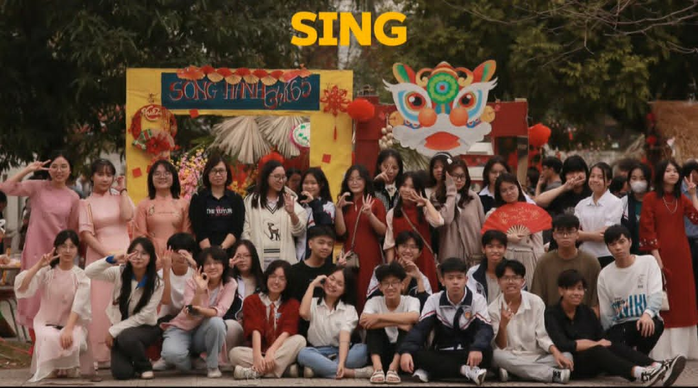
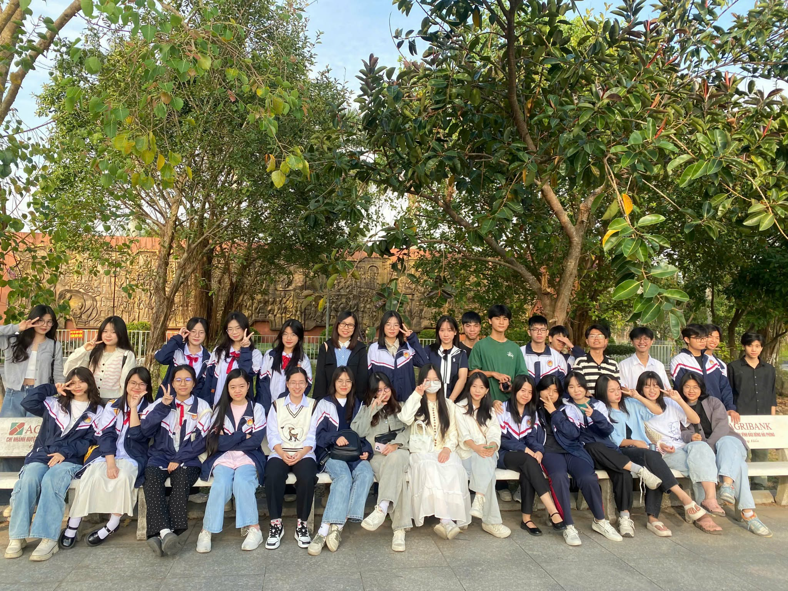

Có những nghề đi qua năm tháng bằng sự lặng thầm, nhưng để lại trong lòng người dấu ấn không thể phai mờ. Trên bục giảng giản dị, thầy cô đã dành cả thanh xuân để vun đắp ước mơ, chắp cánh tri thức cho bao thế hệ học trò.
Nhân ngày Nhà giáo Việt Nam 20/11, tập thể lớp 12C4 xin gửi đến thầy cô lời tri ân chân thành nhất. Tờ báo tường này là món quà tinh thần nhỏ bé, được viết nên từ lòng biết ơn sâu sắc và tình cảm kính yêu mà chúng em luôn dành cho những người đã và đang dìu dắt chúng em trên con đường học vấn.
Hòa chung không khí chào mừng ngày Nhà giáo Việt Nam 20/11, lớp 12C4 đã tích cực tham gia các phong trào thi đua do nhà trường phát động. Tập thể lớp sôi nổi hưởng ứng các hoạt động như viết báo tường, thi văn nghệ, thi cắm hoa và các hoạt động học tập chào mừng ngày lễ ý nghĩa này. Thông qua những hoạt động ấy, chúng em không chỉ có cơ hội thể hiện sự sáng tạo mà còn gửi gắm tình cảm, sự kính trọng của mình đến thầy cô – những người luôn tận tụy vì học trò thân yêu.
Bài thơ: Dấu phấn thời gian
Bảng xanh còn đó bụi phấn bay,
Thầy cô lặng lẽ tháng năm dài.
Trang vở học trò đầy chữ mực,
Là bao tâm huyết gửi tương lai.
Một lời nhắc nhở khi ta mỏi,
Một ánh nhìn theo lúc lạc đường.
Chúng em lớn dần trong yêu thương,
Từ bao bài giảng rất đời thường.
Ngày 20/11 đến gần đây,
Xin gửi thầy cô trọn ơn này.
Mai sau khôn lớn đi muôn nẻo,
Ơn người đưa đò mãi không phai.
📌 Câu đố vui: Nghề gì không tạo ra sản phẩm, nhưng lại tạo ra tất cả? 👉 Đáp án: Nghề giáo 👏
📌 Chuyện vui: Thầy hỏi: “Bài này dễ hay khó?” Cả lớp đồng thanh: “Dạ… dễ ạ!” Thầy cười: “Vậy sao điểm kiểm tra toàn… khóc thế này?”


Báo tường mừng Ngày Nhà giáo Việt Nam 20/11 là tấm lòng tri ân chân thành của tập thể lớp 12C4 gửi tới thầy cô kính yêu. Qua từng trang báo, chúng em mong muốn bày tỏ lòng biết ơn sâu sắc đối với những hy sinh thầm lặng, những bài học quý giá mà thầy cô đã trao gửi suốt chặng đường học trò. Dù mai này mỗi người một phương trời, chúng em vẫn sẽ luôn ghi nhớ công ơn dạy dỗ của thầy cô và trân trọng những tháng năm tươi đẹp dưới mái trường thân yêu.
Thăm dò ý kiến:
Bạn thấy những thông tin trên có thú vị không ?
Có KhôngPhần bạn yêu thích nhất ?
Hoạt động Bài viết - Sáng tác Góc vui học trò